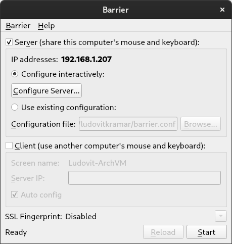
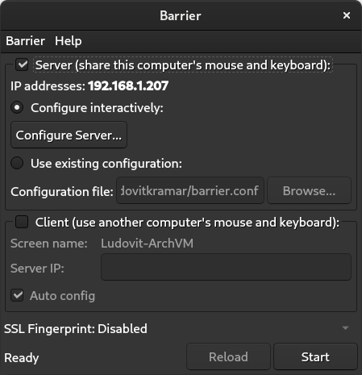

This has been done on a default install of Ubuntu Server 20.04 running in a virtual machine.
Run sudo fdisk /dev/vda
Type p to print the current partitions.
Command (m for help): p
Disk /dev/vda: 30 GiB, 32212254720 bytes, 62914560 sectors
Units: sectors of 1 * 512 = 512 bytes
Sector size (logical/physical): 512 bytes / 512 bytes
I/O size (minimum/optimal): 512 bytes / 512 bytes
Disklabel type: gpt
Disk identifier: 48D2A697-981C-4382-AFDA-28F899958902
Device Start End Sectors Size Type
/dev/vda1 2048 4095 2048 1M BIOS boot
/dev/vda2 4096 41940991 41936896 20G Linux filesystemIn this case, our root partition is the last one with a size of 20G, and we want to grow it to fill the rest of the drive.
Type d to delete the 2nd partition.
Type n to create a new partition (you may need to specify the start, if it is not the same as the pre-expansion partition start), by default the new partition will fill the whole drive, as long as we don’t reformat, no data will be lost.
When asked Do you want to remove the signature? [Y]es/[N]o: type n.
Type w to write the changes to the disk.
Run sudo partprobe, so that linux is happy.
Run sudo resize2fs /dev/vda2 to actually resize the file system.
Now you can confirm the successful operation with df -h | grep /dev/vda2.
/dev/vda2 30G 19G 9.5G 67% /, now we have free space again!
This configuration is provided AS-IS and as an example/reference for those who do not find a working configuration for themselves. It is not always kept up to date and no support is provided.
Assuming: - Your Matrix domain: example.org - Your TURN domain (arbitrary): turn.example.org - Your Public IP: 1.2.3.4 - Your Private IP for the box hosing the services: 10.11.12.13 - A shared secret between synapse and coturn: ThisIsASharedSecret-ChangeMe - You want Firefox compatiblity (TURNS only is not supported)
homeserver.yaml:
## Turn ##
# The public URIs of the TURN server to give to clients
turn_uris:
- "turns:turn.example.org?transport=udp"
- "turns:turn.example.org?transport=tcp"
- "turn:turn.example.org?transport=udp"
- "turn:turn.example.org?transport=tcp"
# The shared secret used to compute passwords for the TURN server
turn_shared_secret: "ThisIsASharedSecret-ChangeMe"
# How long generated TURN credentials last
turn_user_lifetime: "1h"
turnserver.conf:
syslog
lt-cred-mech
use-auth-secret
static-auth-secret=ThisIsASharedSecret-ChangeMe
realm=example.org
cert=/etc/letsencrypt/live/turn.example.org/fullchain.pem
pkey=/etc/letsencrypt/live/turn.example.org/privkey.pem
no-udp
external-ip=1.2.3.4
min-port=64000
max-port=65535Allow ports: - TCP 3478 - UDP 3478 - TCP 3479 - UDP 3479 - TCP 5349 - UDP 5349 - UDP 64000 to 65535
Written on 22-Jan-2022 by Ludovit Kramar
https://gist.github.com/maxidorius/2b0acc2e707ae9a2d6d0267026a1024f↩︎
This is done on Debian Bullseye. See other posts for context on GPU pass-through and network setup.
I used this project: https://github.com/kholia/OSX-KVM
In a directory where you want to store the vm (and the virtual disk) run:
git clone --depth 1 --recursive https://github.com/kholia/OSX-KVM.git
./fetch-macOS-v2.py
Choose 4. Big Sur (11.6) - RECOMMENDED
apt install --no-install-recommends libguestfs-tools
qemu-img convert BaseSystem.dmg -O raw BaseSystem.img
qemu-img create -f qcow2 mac_hdd_ng.img 128G
The following command is presented as mandatory, but without it, I do not observe any differences.
echo 1 > /sys/module/kvm/parameters/ignore_msrs
./OpenCore-Boot.sh
Connect to VNC with ssh tunnel.
Choose Disk Utility
Click Erase, name the partition and chose Mac OS Extended (Journaled).
Close Disk Utility and Click reinstall Big Sur.
Follow the installation steps and wait until the first stage finishes.
On the host run sed "s/CHANGEME/$USER/g" macOS-libvirt-Catalina.xml > macOS.xml.
<interface type='network'>
<mac address='52:54:00:10:35:7a'/>
<source network='br-net'/>
<model type='virtio'/>
<address type='pci' domain='0x0000' bus='0x00' slot='0x08' function='0x0'/>
</interface>Change directory of files, and set up network.
<address type='pci' domain='0x0000' bus='0x00' slot='0x08' function='0x0'/> confirm network card’s bus must be on 0x00.
Install virt-viewer to connect remotely through spice. (Or change the settings to use VNC).
ssh user@host -L 5900:localhost:5900 5901:localhost:5901 5902:localhost:5902
change top line to <domain type='kvm' xmlns:qemu='http://libvirt.org/schemas/domain/qemu/1.0'>
<qemu:commandline>
<qemu:arg value='-device'/>
<qemu:arg value='isa-applesmc,osk=ourhardworkbythesewordsguardedpleasedontsteal(c)AppleComputerInc'/>
<qemu:arg value='-smbios'/>
<qemu:arg value='type=2'/>
<qemu:arg value='-device'/>
<qemu:arg value='usb-tablet'/>
<qemu:arg value='-device'/>
<qemu:arg value='usb-kbd'/>
<qemu:arg value='-cpu'/>
<qemu:arg value='Penryn,kvm=on,vendor=GenuineIntel,+invtsc,vmware-cpuid-freq=on,+ssse3,+sse4.2,+popcnt,+avx,+aes,+xsave,+xsaveopt,check'>
</qemu:commandline>Don’t let multiple VMs have the same mac address.
Choose Installer when booting
Finish the setup process and shutdown.
<graphics type='spice' autoport='yes'>
<listen type='address'/>
</graphics>
<video>
<model type='vga' vram='65536' heads='1' primary='yes'/>
<address type='pci' domain='0x0000' bus='0x09' slot='0x01' function='0x0'/>
</video>Replace the above graphics stuff with pci pass-through.
<hostdev mode='subsystem' type='pci' managed='yes'>
<source>
<address domain='0x0000' bus='0x01' slot='0x00' function='0x0'/>
</source>
<address type='pci' domain='0x0000' bus='0x07' slot='0x00' function='0x0' multifunction='on'/>
</hostdev>
<hostdev mode='subsystem' type='pci' managed='yes'>
<source>
<address domain='0x0000' bus='0x01' slot='0x00' function='0x1'/>
</source>
<address type='pci' domain='0x0000' bus='0x07' slot='0x00' function='0x1'/>
</hostdev>
<hostdev mode='subsystem' type='pci' managed='yes'>
<source>
<address domain='0x0000' bus='0x00' slot='0x14' function='0x0'/>
</source>
<address type='pci' domain='0x0000' bus='0x08' slot='0x00' function='0x0'/>
</hostdev>Give it more memory and cpu
<memory unit='KiB'>12582912</memory>
<currentMemory unit='KiB'>12582912</currentMemory>
<vcpu placement='static'>8</vcpu>Trying to upgrade proves to be rather unstable and restarting can cause issues, after shutting down the mac vm I tried to start a linux vm with the same pci devices pass-through settings, the debian host crashed completely, and other random issues can also be present.
XCode seems to work fine.
I have passed the host usb controller from the motherboard to the vm, this allows the vm to use all the usb ports, by doing so I can plug my dragonfly red usb audio device and have audio without any hassle. The issue with this is that often there is cracking noises, I observe them in linux when under high load, but on macOS these glitches are much more prevalent.
when / is on a gpt formatted drive, and on that same drive there’s a partition of type swap, systemd-gpt-auto-generator will automatically use that swap partition. This is irrelevant of the settings in fstab.
I’ve learned about this when trying to disable swap space, but wasn’t able to do so.
In order to disable swap, (besides removing it from fstab), run systemctl --type swap to find out the name of the partition, then mask like this: systemctl mask dev-nvme0n1p3.swap.
Written on 10-Feb-2022 by Ludovit Kramar
Thanks to heftig from the Arch Linux matrix chat room
First the /etc/network/interfaces file:
# This file describes the network interfaces available on your system
# and how to activate them. For more information, see interfaces(5).
source /etc/network/interfaces.d/*
# The loopback network interface
auto lo
iface lo inet loopback
# The primary network interface
allow-hotplug enp0s25
iface enp0s25 inet manual
auto br0
iface br0 inet dhcp
bridge_ports enp0s25This is great for me as I don’t need to set up any addresses and the virtual machines automatically get their addresses and dns from the router.
Create an XML file named br-net.xml anywhere with the following contents:
<network>
<name>br-net</name>
<forward mode='bridge'/>
<bridge name='br0'/>
</network>Then import it with the command: virsh net-define br-net.xml
insmod linux
ls Find your boot partition, if it is a separate partition, don’t include /boot. ls (hd0,msdos1)/boot Find the file names for your linux and initrd. set root=(hd0,msdos1) linux /boot/vmlinuz-linux-zen root=/dev/vda1 Specify correct root partition or uuid. initrd /boot/initramfs-linux-zen.img boot
Written on 29-Dec-2021 by Ludovit Kramar
gsettings set org.gnome.desktop.wm.preferences resize-with-right-button true
nproc --all, this can be used as an argument putting in within $().
Someone says it is recommended to set zfs set xattr=sa dnodesize=auto pool/dataset. Then the share can simply be created with zfs set sharenfs="ro=@192.168.1.0/24" pool/dataset
The software is installed, but it says command not found!?
Add export PATH=/sbin/:/usr/bin/:$PATH to .bashrc or .zshrc.
#Custom prompt is optional
PS1='[%F{green}%n%f@%m %d]# '
HISTFILE=~/.histfile
HISTSIZE=10000
SAVEHIST=10000
setopt beep extendedglob
bindkey -e
# End of lines configured by zsh-newuser-install
# The following lines were added by compinstall
zstyle :compinstall filename '/home/ludovitkramar/.zshrc'
autoload -Uz compinit
compinit
# End of lines added by compinstall
#Start of key bindings
# create a zkbd compatible hash;
# to add other keys to this hash, see: man 5 terminfo
typeset -g -A key
key[Home]="${terminfo[khome]}"
key[End]="${terminfo[kend]}"
key[Insert]="${terminfo[kich1]}"
key[Backspace]="${terminfo[kbs]}"
key[Delete]="${terminfo[kdch1]}"
key[Up]="${terminfo[kcuu1]}"
key[Down]="${terminfo[kcud1]}"
key[Left]="${terminfo[kcub1]}"
key[Right]="${terminfo[kcuf1]}"
key[PageUp]="${terminfo[kpp]}"
key[PageDown]="${terminfo[knp]}"
key[Shift-Tab]="${terminfo[kcbt]}"
# setup key accordingly
[[ -n "${key[Home]}" ]] && bindkey -- "${key[Home]}" beginning-of-line
[[ -n "${key[End]}" ]] && bindkey -- "${key[End]}" end-of-line
[[ -n "${key[Insert]}" ]] && bindkey -- "${key[Insert]}" overwrite-mode
[[ -n "${key[Backspace]}" ]] && bindkey -- "${key[Backspace]}" backward-delete-char
[[ -n "${key[Delete]}" ]] && bindkey -- "${key[Delete]}" delete-char
[[ -n "${key[Up]}" ]] && bindkey -- "${key[Up]}" up-line-or-history
[[ -n "${key[Down]}" ]] && bindkey -- "${key[Down]}" down-line-or-history
[[ -n "${key[Left]}" ]] && bindkey -- "${key[Left]}" backward-char
[[ -n "${key[Right]}" ]] && bindkey -- "${key[Right]}" forward-char
[[ -n "${key[PageUp]}" ]] && bindkey -- "${key[PageUp]}" beginning-of-buffer-or-history
[[ -n "${key[PageDown]}" ]] && bindkey -- "${key[PageDown]}" end-of-buffer-or-history
[[ -n "${key[Shift-Tab]}" ]] && bindkey -- "${key[Shift-Tab]}" reverse-menu-complete
# Finally, make sure the terminal is in application mode, when zle is
# active. Only then are the values from $terminfo valid.
if (( ${+terminfo[smkx]} && ${+terminfo[rmkx]} )); then
autoload -Uz add-zle-hook-widget
function zle_application_mode_start { echoti smkx }
function zle_application_mode_stop { echoti rmkx }
add-zle-hook-widget -Uz zle-line-init zle_application_mode_start
add-zle-hook-widget -Uz zle-line-finish zle_application_mode_stop
fi
#end of key bindings
zstyle ':completion:*' menu select
autoload -Uz up-line-or-beginning-search down-line-or-beginning-search
zle -N up-line-or-beginning-search
zle -N down-line-or-beginning-search
[[ -n "${key[Up]}" ]] && bindkey -- "${key[Up]}" up-line-or-beginning-search
[[ -n "${key[Down]}" ]] && bindkey -- "${key[Down]}" down-line-or-beginning-search
#Arch:
source /usr/share/zsh/plugins/zsh-syntax-highlighting/zsh-syntax-highlighting.zsh
source /usr/share/zsh/plugins/zsh-autosuggestions/zsh-autosuggestions.zsh
#Debian:
source /usr/share/zsh-syntax-highlighting/zsh-syntax-highlighting.zsh
source /usr/share/zsh-autosuggestions/zsh-autosuggestions.zshFixed audio by running protontricks 377160 xact.
Modify the following files to disable VSync:
steamapps/common/Fallout 4/Fallout4_Default.ini
steamapps/common/Fallout 4/Fallout4/Fallout4Prefs.ini
compdata/377160/pfx/drive_c/users/steamuser/Documents/MyGame/Fallout4/Fallout4.ini
compdata/377160/pfx/drive_c/users/steamuser/Documents/MyGames/Fallout4/Fallout4Prefs.iniIn all of them, changed the value iPresentInterval from 1 to 0
Limit FPS with mangohud, set launch option to: MANGOHUD_CONFIG="fps_limit=73" mangohud %command%
How to change ibus tray icon color?
Use the command $ gsettings set org.freedesktop.ibus.panel xkb-icon-rgba 'COLOR'.
A hex value like #rrggbb works just fine, rgba can also be used. dconf-editor is another option.
How to create a swapfile?
dd if=/dev/zero of=/swapfile bs=1M count=512 status=progress for a 512M swap file.
Set the right permissions (a world-readable swap file is a huge local vulnerability):
chmod 600 /swapfile
After creating the correctly sized file, format it to swap:
mkswap /swapfile
Activate the swap file:
swapon /swapfile
Finally, edit the fstab configuration to add an entry for the swap file:
/swapfile none swap defaults 0 0
How to make files impossible to delete in linux?
chattr is used to achieve this, +i to make it immutable and -i to make it “normal”.
-R to make it recursive.
In ~/.config/environment.d/envvars.conf add export MOZ_ENABLE_WAYLAND=1. Can be verified by running xprop and clicking on the firefox window.
According to the Arch wiki, setting gfx.webrender.compositor.force-enabled to true in about:config will greatly improve performance.
zfs snapshot pool/dataset@snapshotName to create.
zfs list -t snapshot to view snapshots.
File: /etc/X11/xorg.conf.d/20-amdgpu.conf.
Contents:
Section "Device"
Identifier "AMD"
Driver "amdgpu"
Option "VariableRefresh" "true"
EndSectionRun: watch -d grep -e Dirty: -e Writeback: /proc/meminfo.
Install reflector.
And run: sudo reflector --latest 70 --protocol http --protocol https --sort rate --save /etc/pacman.d/mirrorlist --verbose.
sudo reflector --protocol http --protocol https --sort rate --verbose.
systemctl reboot --firmware-setup
qemu-img info ./file to view info,
and qemu-img convert ./in -O raw ./out.img to convert to raw.
fdisk ./disk.img and note down the sector size, 512 and 4092 is common.
See where our partition starts. In this case it starts at 718848.
Device Boot Start End Sectors Size Id Type
win8preview.img1 * 2048 718847 716800 350M 7 HPFS/NTFS/exFAT
win8preview.img2 718848 125827071 125108224 59.7G 7 HPFS/NTFS/exFATmount -o loop,offset=$((718848*512)) win8preview.img /mnt2.
Not upgrade, clean installation from the ISO. Useful for virtual machines.
Select the Windows 11 version and see the error message.
Go back a couple of steps.
Press Shift-F10 to bring up CMD.
Run regedit.
In HKEY_LOCAL_MACHINE\SYSTEM\Setup create new key LabConfig.
Add a DWORD (32-bit) BypassTPMCheck and set value to 1.
Another named BypassSecureBootCheck and also give it a value of 1.
Install yt-dlp.
In .bashrc or .zshrc add: yt() { yt-dlp "$@" --format "(bestaudio[acodec^=opus]/bestaudio)/best" --verbose --force-ipv4 --sleep-requests 1 --sleep-interval 5 --max-sleep-interval 30 --ignore-errors --no-continue --no-overwrites --download-archive archive.log --add-metadata --extract-audio --output "%(uploader)s - %(upload_date)s - %(title)s [%(id)s].%(ext)s" --extractor-args youtube:player_client=android --throttled-rate 100K 2>&1 | tee output.log; }.
Simply run yt "http://link", and it will download the music only in the highest quality.
In ~/.config/user-dirs.dirs change the directory you want gone to just $HOME.
Example for videos: XDG_VIDEOS_DIR="$HOME".
Additional settings are present in /etc/xdg/user-dirs.conf, there’s also a .default file in the same directory.
debsecan --suite bullseye --format packages --only-fixed
hostname.local:/path/to/share /mount/point/of/share nfs defaults,timeo=900,retrans=5,_netdev 0 0
In /etc/apt/sources.list: deb http://archive.debian.org/debian-archive/debian/ squeeze main contrib non-free
As root run: echo 'Acquire::Check-Valid-Until "false";' >/etc/apt/apt.conf.d/90ignore-release-date
It is as simple as running zfs set volsize=25G name/zvol-name. One can run something like zfs get all | grep vol to find out the name.
Open dconf-editor
Go to org/gnome/desktop/wm/keybindings
Switch the values of switch-applications and switch-windows
Sadly I do not know who was the original author of the key bindings part.↩︎
Thanks to Ivo from the Fallout 4 protondb page: https://www.protondb.com/app/377160↩︎
Source: https://wiki.archlinux.org/title/IBus#Tray_icon_color↩︎
https://wiki.archlinux.org/title/swap#Manually↩︎
https://linuxfreelancer.com/how-to-mount-a-raw-disk-image↩︎
https://www.youtube.com/watch?v=ifUJt1tqP_Q&t=937s↩︎
https://stackoverflow.com/questions/36080756/archive-repository-for-debian-squeeze↩︎
Create zvol: zfs create -V 15G z2mx/archsrvr-matrix
See Bridged network for virtual machines in debian bullseye for information about this network setup.
Create the vm:
virt-install \
--name archsrvr-matrix \
--rng /dev/random \
--memory 8192 \
--vcpus 2 \
--cpu host \
--cdrom /z2mx/ISO/arch.iso \
--boot cdrom \
--os-variant archlinux \
--disk path=/dev/zd32 \
--network network=br-net \
--graphics vncSSH into the vm host server with ssh user@server -L 5900:localhost:5900, and use a VNC viewer on localhost:5900 to install arch.
Install and configure Arch Linux.
Type passwd to set root password and connect to the vm through ssh for convenience.
Create the following partitions: (dos disklabel)
Device Boot Start End Sectors Size Id Type
/dev/vda1 * 10240 1001471 991232 484M c W95 FAT32 (LBA)
/dev/vda2 1011712 31457279 30445568 14.5G 83 LinuxI don’t recommend creating a swapfile or swap partition, as 2G of memory is not enough for synapse, it will use a lot of swap and create high disk usage, without swap it is stable and causes no such issues.
Format the partitions: mkfs.fat -F 32 /dev/vda1 and mkfs.ext4 /dev/vda2.
Mount them: mount /dev/vda2 /mnt, mkdir /mnt/boot and mount /dev/vda1 /mnt/boot.
Install the system: pacstrap /mnt base linux-lts nano matrix-synapse.
Run genfstab -U /mnt >> /mnt/etc/fstab and arch-chroot /mnt.
Set up the network, create /etc/systemd/network/20-wired.network and add:
[Match]
Name=enp1s0
[Network]
DHCP=yesEnable systemd-resolved and systemd-networkd.
Using dhcpcd is another great option.
openssh and edit /etc/ssh/sshd_config:Find PermitRootLogin, uncomment and change to yes.
Enable sshd.
Set root password with passwd.
Run ln -sf /usr/share/zoneinfo/Region/City /etc/localtime and hwclock --systohc.
Uncomment en_US.UTF-8 in /etc/locale.gen/ and run locale-gen.
Create /etc/locale and add LANG=en_US.UTF-8.
Set hostname in /etc/hostname.
Install grub and dosfstools. Then run: grub-install --target=i386-pc /dev/vda and grub-mkconfig -o /boot/grub/grub.cfg.
Exit chroot and power off. Destroy the VM if necessary.
Run virsh edit archsrvr-matrix in the host, find <boot dev='cdrom'/> and change cdrom to hd. It is also good time to reduce the memory to 2097152. Now start the vm.
With this setup the system only uses 56M of memory, we have plenty of resources for the server.
Install sudo and run:
$ cd /var/lib/synapse
$ sudo -u synapse python -m synapse.app.homeserver \
--server-name my.domain.name \
--config-path /etc/synapse/homeserver.yaml \
--generate-config \
--report-stats=yesSet public_baseurl in /etc/synapse/homeserver.yaml.
Run systemctl enable --now synapse.service and create user with register_new_matrix_user -c /etc/synapse/homeserver.yaml http://127.0.0.1:8008.
As we are running synapse inside a vm, comment out bind_addresses in /etc/synapse/homeserver.yaml.
Set up reverse proxy. (For Debian Bullseye with nginx)
Create /etc/nginx/sites-enabled/matrix.example.com. And add what’s below following these instructions https://github.com/matrix-org/synapse/blob/develop/docs/reverse_proxy.md
server {
listen 443 ssl http2;
listen [::]:443 ssl http2;
# For the federation port
listen 8448 ssl http2 default_server;
listen [::]:8448 ssl http2 default_server;
server_name matrix.example.com;
location ~* ^(\/_matrix|\/_synapse\/client) {
# note: do not add a path (even a single /) after the port in `proxy_pass`,
# otherwise nginx will canonicalise the URI and cause signature verification
# errors.
proxy_pass http://localhost:8008;
proxy_set_header X-Forwarded-For $remote_addr;
proxy_set_header X-Forwarded-Proto $scheme;
proxy_set_header Host $host;
# Nginx by default only allows file uploads up to 1M in size
# Increase client_max_body_size to match max_upload_size defined in homeserver.yaml
client_max_body_size 50M;
}
}Remember to change server_name.
certbot to get a certificate for your domain.Now you should have a working matrix homeserver!
rsync -P -r --exclude=".*" --archive -t . 'target'rsync -arvz --progress -e 'ssh -p 222' ./Documents/ user@host:/home/user/Sync/Docs/#!/bin/bash
# A script to perform remote incremental backups using rsync
set -o errexit
set -o nounset
set -o pipefail
readonly SOURCE_DIR="/home/user/python"
readonly REMOTE_DIR="/var/lib/jail/Backup/test/123/abc"
readonly DATETIME="$(date '+%Y-%m-%d_%H:%M:%S')"
readonly BACKUP_PATH="${REMOTE_DIR}/${DATETIME}"
readonly LATEST_LINK="${REMOTE_DIR}/latest"
HOST=user@host
ssh -p 222 ${HOST} "mkdir -p ${REMOTE_DIR}"
rsync -avzP \
--log-file=rsync_snapshot.log \
-e 'ssh -p 222' \
--delete \
--link-dest "../latest" \
--exclude=".*" \
--copy-links \
${SOURCE_DIR} ${HOST}:${REMOTE_DIR}/incomplete_back-${DATETIME} \
&& ssh -p 222 ${HOST} \
"mv ${REMOTE_DIR}/incomplete_back-$DATETIME $REMOTE_DIR/back-${DATETIME} \
&& rm -f ${REMOTE_DIR}/latest \
&& ln -s back-${DATETIME} ${REMOTE_DIR}/latest"rsync -arvzt --progress --exclude={'.*','Music','anaconda3'} -e 'ssh -p 222' . user@host:/home/user/laptop-home-backup/#!/bin/bash
# A script to perform remote incremental backups using rsync, previous versions of the file will be moved to the OLD_PATH folder and given a suffix with the date and time of the backup time.
set -o errexit
set -o nounset
set -o pipefail
readonly SOURCE_DIR="/path/to/be/backed/up"
readonly REMOTE_DIR="/path/on/remote/server"
readonly DATETIME="$(date '+%Y-%m-%d_%H:%M:%S')"
readonly BACKUP_PATH="${REMOTE_DIR}/current"
readonly OLD_PATH="${REMOTE_DIR}/old"
HOST=user@hostname
ssh -p 222 ${HOST} "mkdir -p ${REMOTE_DIR}"
rsync -avztbP \
--log-file=rsync_snapshot.log \
-e 'ssh -p 222' \
--delete \
--include="Documents/***" \
--include="Downloads/***" \
--include="Desktop/***" \
--include="Pictures/***" \
--exclude="*" \
--copy-links \
--backup-dir=${OLD_PATH} \
--suffix="."${DATETIME} \
--chmod=Du=rwx,Dg=rx,Do=rx,Fu=rw,Fg=r,Fo=r \
${SOURCE_DIR} ${HOST}:${BACKUP_PATH} \The command below from the debian wiki installs the basic packages, if using a host with a DE remove --no-install-recommends to get additional tools.
apt-get install --no-install-recommends qemu-system libvirt-clients libvirt-daemon-systemInstall virtinst to create new virtual machines easily from the command line.
First one needs to download the ISO file.
wget https://free.nchc.org.tw/arch/iso/2021.12.01/archlinux-2021.12.01-x86_64.isoThen create the storage space, I used ZFS zvol:
zfs create -V 100G zmirror/arch-vmUsing ZFS on debian is just a matter of installing zfsutils-linux, contrib repo needs to be enabled.
With virt-install I created the virtual machine. Remember that ovmf needs to be installed to boot using uefi: apt install ovmf.
virt-install --name arch-vm --boot uefi --rng /dev/random --memory 12288 --vcpus 8 --cpu host --cdrom /z2mx/ISO/arch.iso --boot cdrom --os-variant archlinux --disk path=/dev/zd0 --network network=br-net --graphics vncAs I did not want to install a DE in Debian, I ssh into the debian host with port forwarding from my laptop to install Arch Linux through vnc: ssh user@debian.lan -L 5900:localhost:5900.
Now it’s time to format the disks and pacstrap the OS to our partitions. Refer to the wiki for detailed instructions. It may be possible to use the archinstall script.
Because I used a bridged network, I just followed the systemd-networkd instructions from the Arch Linux wiki, which is simply to create /etc/systemd/network/20-wired.network with this inside:
[Match]
Name=enp1s0
[Network]
DHCP=yesOf course the systemd-networkd and systemd-resolved services need to be started.
I chose systemd-boot as the boot manager, while it is easy to install to the ESP partition with bootctl install, it requires some manual configuration.
First modify /boot/loader/loader.conf (assuming /boot is the ESP):
default arch.conf
timeout 0
console-mode max
editor noAs it is a virtual machine with only one system, I don’t want any timeout, the next step is to create the entries, first one being /boot/loader/entries/arch.conf:
title Arch Linux
linux /vmlinuz-linux-zen
initrd /initramfs-linux-zen.img
options root="LABEL=arch_os" rwAnd second one being /boot/loader/entries/arch-fallback.conf:
title Arch Linux (fallback initramfs)
linux /vmlinuz-linux-zen
initrd /initramfs-linux-zen-fallback.img
options root="LABEL=arch_os" rwBe aware that I am using the linux-zen kernel, that needs to be changed if using other kernel(s).
The system will not boot if we don’t actually label the root partition arch_os, so do that with e2label.
This is the interesting part, a script from the arch wiki can tell us the IOMMU groups, and the IDs of our PCI devices.
#!/bin/bash
shopt -s nullglob
for g in `find /sys/kernel/iommu_groups/* -maxdepth 0 -type d | sort -V`; do
echo "IOMMU Group ${g##*/}:"
for d in $g/devices/*; do
echo -e "\t$(lspci -nns ${d##*/})"
done;
done;The script works without any problem in Debian, in my case the part relevant to the GPU was like this:
IOMMU Group 1:
00:01.0 PCI bridge [0604]: Intel Corporation Xeon E3-1200 v3/4th Gen Core Processor PCI Express x16 Controller [8086:0c01] (rev 06)
01:00.0 VGA compatible controller [0300]: Advanced Micro Devices, Inc. [AMD/ATI] Ellesmere [Radeon RX 470/480/570/570X/580/580X/590] [1002:67df] (rev ef)
01:00.1 Audio device [0403]: Advanced Micro Devices, Inc. [AMD/ATI] Ellesmere HDMI Audio [Radeon RX 470/480 / 570/580/590] [1002:aaf0]Now that we know the IDs we need to add them in this format to /etc/initramfs-tools/modules:
vfio_pci ids=1002:67df,1002:aaf0After a reboot if we run lspci -knn we should see that the kernel driver in use is vfio-pci:
01:00.0 VGA compatible controller [0300]: Advanced Micro Devices, Inc. [AMD/ATI] Ellesmere [Radeon RX 470/480/570/570X/580/580X/590] [1002:67df] (rev ef)
Subsystem: Micro-Star International Co., Ltd. [MSI] Radeon RX 570 Armor 8G OC [1462:341b]
Kernel driver in use: vfio-pci
Kernel modules: amdgpu
01:00.1 Audio device [0403]: Advanced Micro Devices, Inc. [AMD/ATI] Ellesmere HDMI Audio [Radeon RX 470/480 / 570/580/590] [1002:aaf0]
Subsystem: Micro-Star International Co., Ltd. [MSI] Ellesmere HDMI Audio [Radeon RX 470/480 / 570/580/590] [1462:aaf0]
Kernel driver in use: vfio-pci
Kernel modules: snd_hda_intelNow the GPU is ready to be used in a virtual machine.
First lets run virsh nodedev-list --tree to see the information about our devices. In my case pci_0000_01_00_0 and pci_0000_01_00_1 is what I want the vm to use.
If we run virsh nodedev-dumpxml pci_0000_01_00_0 we can see all the information about our device, in <product> we can confirm that this is the gpu, but it is the <address> lines that we need.
<device>
<name>pci_0000_01_00_0</name>
<path>/sys/devices/pci0000:00/0000:00:01.0/0000:01:00.0</path>
<parent>pci_0000_00_01_0</parent>
<driver>
<name>vfio-pci</name>
</driver>
<capability type='pci'>
<class>0x030000</class>
<domain>0</domain>
<bus>1</bus>
<slot>0</slot>
<function>0</function>
<product id='0x67df'>Ellesmere [Radeon RX 470/480/570/570X/580/580X/590]</product>
<vendor id='0x1002'>Advanced Micro Devices, Inc. [AMD/ATI]</vendor>
<iommuGroup number='1'>
<address domain='0x0000' bus='0x00' slot='0x01' function='0x0'/>
<address domain='0x0000' bus='0x01' slot='0x00' function='0x0'/>
<address domain='0x0000' bus='0x01' slot='0x00' function='0x1'/>
</iommuGroup>
<pci-express>
<link validity='cap' port='0' speed='8' width='16'/>
<link validity='sta' speed='8' width='16'/>
</pci-express>
</capability>
</device>Now let’s edit the vm with virsh edit vm-name, a GPU is a multifunction device, we can see that from all the outputs of the different tools, so two <hostdev> in the <devices> section needs to be created.
I originally added the following:
<hostdev mode='subsystem' type='pci' managed='yes'>
<source>
<address domain='0x0000' bus='0x01' slot='0x00' function='0x0'/>
</source>
</hostdev>
<hostdev mode='subsystem' type='pci' managed='yes'>
<source>
<address domain='0x0000' bus='0x01' slot='0x00' function='0x1'/>
</source>
</hostdev>This software is very smart, so it added the addresses where the pci devices are connected to the vm, while now the vm could boot and use the gpu, I opened the settings again and put the two hostdev on the same bus and slot but with a different function, just like they were on the host. It does not seems to make a difference in my case, but I do want to mention it.
<hostdev mode='subsystem' type='pci' managed='yes'>
<source>
<address domain='0x0000' bus='0x01' slot='0x00' function='0x0'/>
</source>
<address type='pci' domain='0x0000' bus='0x07' slot='0x00' function='0x0' multifunction='on'/>
</hostdev>
<hostdev mode='subsystem' type='pci' managed='yes'>
<source>
<address domain='0x0000' bus='0x01' slot='0x00' function='0x1'/>
</source>
<address type='pci' domain='0x0000' bus='0x07' slot='0x00' function='0x1'/>
</hostdev>Another things that doesn’t seem to matter is running virsh nodedev-dettach pci_0000_01_00_0, supposedly that command prepared the device. But it probably is unnecessary with vfio, and when it is needed I observed no issues when not running this command, surely the software is smart enough to prepare the device when launching the vm.
Now it is just a matter of installing the drivers in the guest and enjoying the vm! In my case I passed through the USB controller of my motherboard and it works flawlessly, that leaves the host usb-less, so make sure ssh before doing that.
Make sure a device has the MSI capability before passing through, that can be checked with lspci -v, also, sometimes the bus address may be in decimal, it is usually in hexadecimal, that doesn’t matter when the number is below 10 (almost always), but be aware that sometimes 14 = 20.
This is the USB controller that I passthrough, note that is has MSI:
00:14.0 USB controller: Intel Corporation 9 Series Chipset Family USB xHCI Controller (prog-if 30 [XHCI])
Subsystem: ASRock Incorporation 9 Series Chipset Family USB xHCI Controller
Flags: bus master, medium devsel, latency 0, IRQ 32, IOMMU group 4
Memory at f7e20000 (64-bit, non-prefetchable) [size=64K]
Capabilities: [70] Power Management version 2
Capabilities: [80] MSI: Enable+ Count=1/8 Maskable- 64bit+
Kernel driver in use: vfio-pci
Kernel modules: xhci_pciThis is the edit to the vm’s config:
<hostdev mode='subsystem' type='pci' managed='yes'>
<source>
<address domain='0x0000' bus='0x00' slot='0x14' function='0x0'/>
</source>
<address type='pci' domain='0x0000' bus='0x08' slot='0x00' function='0x0'/>
</hostdev>While it wasn’t defined in /etc/initramfs-tools/modules, it uses the vfio-pci driver automatically when the vm is launched, restarting the vm also causes no issues.
Enjoy the virtual machine! The steps to have a Windows vm “should” be identical. Thanks for reading.
How to use wallpapers that change throughout the day in KDE plasma 5?
In Arch Linux the aur package plasma5-wallpapers-dynamic can be used to achieve this. The project’s github is: https://github.com/zzag/plasma5-wallpapers-dynamic
Once installed the wallpaper type Dynamic will be available in plasma’s desktop configuration.
.heic file for macOS to use in plasma.kdynamicwallpaperbuilder to create your own .heic wallpaper file..heic file:curl https://git.io/JJkjd -sL > dynamicwallpaperconverter.python dynamicwallpaperconverter --crossfade ./myfile.heic to convert myfile.heic to a compatible format. This assumes that the script and the file is in the same folder.wallpaper.heic, rename the file and add it as a background in plasma’s settings.Collect the images you want to use and put them in a folder.
Create a description.json file following this format:
[
{
"CrossFade": true,
"Time": "06:00",
"FileName": "1.png"
},
{
"CrossFade": true,
"Time": "12:00",
"FileName": "2.png"
},
{
"CrossFade": true,
"Time": "18:00",
"FileName": "3.png"
}
]
Change the filenames and the time to suit your needs, more or fewer images can be used.
Additionally, this software can use the position of the sun to chose when to show the images, for that it is necessary to add that information to the description.json file.
Instructions for that can be found here: https://github.com/zzag/plasma5-wallpapers-dynamic/blob/main/src/tools/builder/README.md
Now simply run kdynamicwallpaperbuilder description.json to create the wallpaper.heic file.
Chapter 21 of the FreeBSD handbook on bhyve (https://www.freebsd.org/doc/handbook/virtualization-host-bhyve.html) explains how to set up bridged network for your vm. This will work on an ethernet network card, but it won’t work on wlan (wlan cannot have more than one MAC address).
I use bhyve on my FreeBSD 12.1 laptop to fire up Linux VM. So typically I’m connected to a wireless network and would like to have internet working on my Linux VM. In what follows I share my setup to get a simple NAT. First let’s create the required network interfaces.
# ifconfig bridge create name natif up
# ifconfig tap0 create up
# ifconfig natif addm tap0
# ifconfig natif inet 10.0.0.1/24Next we need to forward our NAT network traffic through the wireless interface, we use pf to do that, by adding the following lines to /etc/pf.conf
ext_if="wlan0"
virt_net="10.0.0.0/24"
scrub all
nat on $ext_if from $virt_net to any -> ($ext_if)
pass log allDon’t forget to enable pf if it is not enabled, and restart it for the changes to take effect. We also make sure that ip forwarding is enabled on the host.
# sysrc pf_enable=yes
# service pf restart
# sysctl net.inet.ip.forwarding=1Then you can fire up your VM using tap0. Once booted, you can configure your guest network interface to be static (inet 10.0.0.2/24). This will allow the guest to access the NAT network, and it will be reachable from the host on 10.0.0.2.
Make sure to always activate the tap device before starting your VM (or after shutting it down). Here is a startup script of my openSUSE 15.1 VM
ifconfig tap0 up
bhyve -AHP -s 0:0,hostbridge -s 1:0,lpc \
-s 2:0,virtio-net,tap0 -s 3:0,virtio-blk,./disk.img \
-s 4:0,ahci-cd,./openSUSE-Leap-15.1-NET-x86_64.iso \
-c 4 -m 2048M \
-s 11,fbuf,tcp=0.0.0.0:5901,w=1280,h=1024,wait \
-s 30,xhci,tablet \
-s 6,hda,play=/dev/dsp0,rec=/dev/dsp0 \
-l bootrom,/usr/local/share/uefi-firmware/BHYVE_UEFI.fd \
opensuse15https://aliov.org/index.php/2020/03/22/bhyve-nat-vm-setup/↩︎
First step is to install kvantum.
Then open the application “Kvantum Manager” and under “Change/Delete Theme” select KvGnome, KvGnomeDark or kvYaru if on ubuntu.
The environment variable QT_STYLE_OVERRIDE=kvantum needs to be set in order for it to work, but we can check the theme out by running an application from the console, an example with Audacious: QT_STYLE_OVERRIDE=kvantum audacious.
Now that we see it working, we can go ahead and add QT_STYLE_OVERRIDE=kvantum to /etc/environment. This can be done by opening the file with any text editor or by appending a line to the file like this: echo 'QT_STYLE_OVERRIDE=kvantum' >> /etc/environment.
Qt applications should now start with the kvantum theme.
 
Some applications have their own theme or settings, musescore for example doesn’t follow the system theme, in krita we can go to Settings > Styles and sellect kvantum.
Written on 11-Feb-2022 by Ludovit Kramar
First download the ISO, then I used virt-install to create the virtual machine:
virt-install \
--name ubnsrvr-vm \
--rng /dev/random \
--memory 4096 \
--vcpus 8 \
--cpu host \
--cdrom /z2mx/ISO/ubuntu-20.04.3-live-server-amd64.iso \
--boot cdrom \
--os-variant ubuntufocal \
--disk path=/dev/zd16 \
--network network=br-net \
--graphics vncIf the host has no gui like mine, it is possible to ssh into the host with port forwarding: ssh user@host -L 5900:localhost:5900, then using localhost:5900 as the address on any VNC viewer allows you to control the installer.
The installation process is very simple, remember to set up ssh because using VNC is not as convenient.
After the installation, type virsh edit ubnsrvr-vm and change cdrom to hd in the <boot> section.
<os>
<type arch='x86_64' machine='pc-q35-5.2'>hvm</type>
<boot dev='hd'/>
</os>Optionally delete the graphics and VNC sections too, make a copy before doing any modifications.
Now Ubuntu Server is installed and working.
Looking around I ended up with this Frankenstein file for nginx (to be put inside /etc/nginx/sites-enabled), with which everything seems to work fine.
server {
server_name nc.kykvit.com;
location ~ /\.ht {
deny all;
}
listen [::]:443 ssl http2; # managed by Certbot
listen 443 ssl http2; # managed by Certbot
ssl_certificate /etc/letsencrypt/live/nc.kykvit.com/fullchain.pem; # managed by Certbot
ssl_certificate_key /etc/letsencrypt/live/nc.kykvit.com/privkey.pem; # managed by Certbot
include /etc/letsencrypt/options-ssl-nginx.conf; # managed by Certbot
ssl_dhparam /etc/letsencrypt/ssl-dhparams.pem; # managed by Certbot
add_header Strict-Transport-Security "max-age=31536000; includeSubDomains" always;
# set max upload size and increase upload timeout:
client_max_body_size 512M;
client_body_timeout 300s;
# Enable gzip but do not remove ETag headers
gzip on;
gzip_vary on;
gzip_comp_level 4;
gzip_min_length 256;
gzip_proxied expired no-cache no-store private no_last_modified no_etag auth;
gzip_types application/atom+xml application/javascript application/json application/ld+json application/manifest+json application/rss+xml application/vnd.geo+json application/vnd.ms-fontobject application/wasm application/x-font-ttf application/x-web-app-manifest+json application/xhtml+xml application/xml font/opentype image/bmp image/svg+xml image/x-icon text/cache-manifest text/css text/plain text/vcard text/vnd.rim.location.xloc text/vtt text/x-component text/x-cross-domain-policy;
location / {
proxy_pass http://192.168.1.231:80;
proxy_set_header X-Forwarded-For $proxy_add_x_forwarded_for;
proxy_set_header Host $http_host;
proxy_set_header X-Forwarded-Proto $scheme;
}
location /.well-known/carddav {
return 301 $scheme://$host/remote.php/dav;
}
location /.well-known/caldav {
return 301 $scheme://$host/remote.php/dav;
}
}
server {
if ($host = nc.kykvit.com) {
return 301 https://$host$request_uri;
} # managed by Certbot
listen 80;
listen [::]:80;
server_name nc.kykvit.com;
return 404; # managed by Certbot
}Nextcloud was installed via snap in an ubuntu server 20.04 virtual machine, the network is bridged to my home LAN.
With these tweaks to /var/snap/nextcloud/current/nextcloud/config/config.php everything worked fine. Some of this settings may not be necessary.
<?php
$CONFIG = array (
'trusted_domains' =>
array (
0 => 'nc.kykvit.com',
),
'trusted_proxies' => array('192.168.1.0/24', 'nc.kykvit.com'),
'overwriteprotocol' => 'https',
'allow_local_remote_servers' => true,
'overwrite.cli.url' => 'http://nc.kykvit.com',
'default_phone_region' => 'TW',
);Crear tarea, navegar a propiedades, acciones, editar acción:
C:\cygwin64\bin\run.exebash -c -l "~/rsync.sh"C:\cygwin64\bin